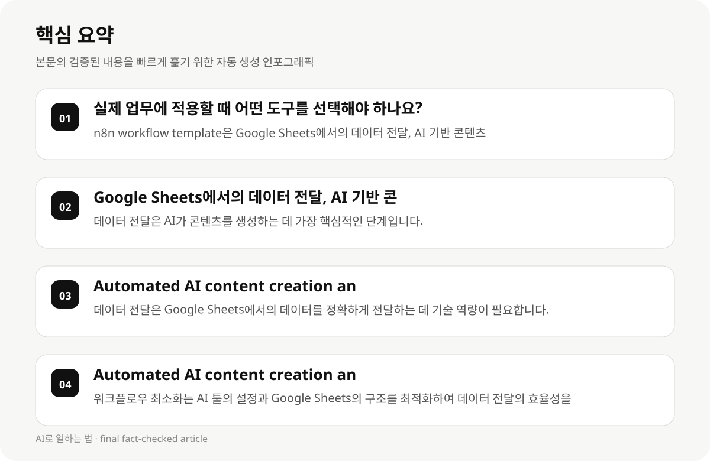

실제 업무에 적용할 때 어떤 도구를 선택해야 하나요? #
직장인 및 지식근로자가 AI 콘텐츠 생성과 인스타그램 포스팅을 Google Sheets에서 실현할 때는 다양한 도구를 고려해야 합니다. 가장 일반적인 선택은 n8n workflow template와 GitHub 프로젝트입니다. n8n은 Google Sheets에서의 데이터 전달, AI 기반 콘텐츠 생성, Instagram 포스팅을 포함한 전반적인 워크플로우를 구현할 수 있으며, 사용자는 Google Sheets에서의 아이디어를 기반으로 AI가 콘텐츠를 생성하고 포스팅을 자동화할 수 있습니다.
GitHub 프로젝트는 Google Sheets에서의 데이터 전달, AI 기반 콘텐츠 생성, Instagram 포스팅을 포함한 전반적인 워크플로우를 구현할 수 있으며, 사용자는 Google Sheets에서의 아이디어를 기반으로 AI가 콘텐츠를 생성하고 포스팅을 자동화할 수 있습니다. 두 도구 모두 Google Sheets와 AI 기반 툴의 조합으로 사용할 수 있으며, 사용자는 기술 역량과 프로젝트 규모에 따라 최적의 선택을 내릴 수 있습니다.
- n8n workflow template은 Google Sheets에서의 데이터 전달, AI 기반 콘텐츠 생성, Instagram 포스팅을 포함한 전반적인 워크플로우를 구현할 수 있습니다.
- GitHub 프로젝트는 Google Sheets에서의 데이터 전달, AI 기반 콘텐츠 생성, Instagram 포스팅을 포함한 전반적인 워크플로우를 구현할 수 있습니다.
- n8n과 GitHub 프로젝트 모두 Google Sheets와 AI 툴의 조합으로 사용할 수 있으며, 사용자는 기술 역량과 프로젝트 규모에 따라 최적의 선택을 내릴 수 있습니다.
Google Sheets에서의 데이터 전달, AI 기반 콘텐츠 생성, Instagram 포스팅을 포함한 전반적인 워크플로우를 구현할 때 가장 중요한 단계는 무엇인가요? #
Google Sheets에서의 데이터 전달, AI 기반 콘텐츠 생성, Instagram 포스팅을 포함한 전반적인 워크플로우는 사용자의 기술 역량, 프로젝트 규모, 기술 스택에 따라 달라질 수 있습니다. 가장 중요한 단계는 데이터 전달입니다. 사용자는 Google Sheets에서의 데이터를 정확하게 전달하여 AI가 콘텐츠를 생성할 수 있도록 설정해야 합니다.
데이터 전달은 AI가 콘텐츠를 생성하는 데 가장 핵심적인 단계입니다. 사용자는 Google Sheets에서의 데이터를 정확하게 전달하여 AI가 콘텐츠를 생성할 수 있도록 설정해야 합니다. 또한, AI 툴의 설정과 Google Sheets의 구조가 일치해야 하며, 사용자는 데이터 전달의 정확성에 주의해야 합니다.
- 데이터 전달은 AI가 콘텐츠를 생성하는 데 가장 핵심적인 단계입니다.
- Google Sheets에서의 데이터를 정확하게 전달하여 AI가 콘텐츠를 생성할 수 있도록 설정해야 합니다.
- 데이터 전달의 정확성은 AI 툴의 성능에 직접적인 영향을 미칩니다.
Automated AI content creation and Instagram publishing from Google Sheets를 구현할 때 사용자는 어떤 기술 역량이 필요하나요? #
Automated AI content creation and Instagram publishing from Google Sheets를 구현할 때 사용자는 다음과 같은 기술 역량이 필요합니다: 데이터 전달, AI 툴 설정, 워크플로우 구현, 프로젝트 관리.
데이터 전달은 Google Sheets에서의 데이터를 정확하게 전달하는 데 기술 역량이 필요하며, 사용자는 Google Sheets의 구조와 AI 툴의 설정을 잘 이해해야 합니다. AI 툴 설정은 사용자의 기술 역량에 따라 달라질 수 있으며, 사용자는 AI 툴의 설정을 잘 이해하고 조정해야 합니다.
- 데이터 전달은 Google Sheets에서의 데이터를 정확하게 전달하는 데 기술 역량이 필요합니다.
- AI 툴 설정은 사용자의 기술 역량에 따라 달라질 수 있으며, 사용자는 AI 툴의 설정을 잘 이해하고 조정해야 합니다.
- 워크플로우 구현은 사용자의 기술 역량과 프로젝트 규모에 따라 달라질 수 있습니다.

Automated AI content creation and Instagram publishing from Google Sheets를 구현할 때의 비용과 시간 절감 전략 #
Automated AI content creation and Instagram publishing from Google Sheets를 구현할 때는 비용과 시간 절감 전략이 중요합니다. 사용자는 다음과 같은 전략을 고려해야 합니다: 워크플로우 최소화, AI 툴 사용 최적화, 프로젝트 규모에 따른 전략적 분할.
워크플로우 최소화는 AI 툴의 설정과 Google Sheets의 구조를 최적화하여 데이터 전달의 효율성을 높이는 데 도움이 됩니다. AI 툴 사용 최적화는 사용자의 기술 역량과 프로젝트 규모에 따라 달라질 수 있으며, 사용자는 AI 툴의 설정을 잘 이해하고 조정해야 합니다.
- 워크플로우 최소화는 AI 툴의 설정과 Google Sheets의 구조를 최적화하여 데이터 전달의 효율성을 높이는 데 도움이 됩니다.
- AI 툴 사용 최적화는 사용자의 기술 역량과 프로젝트 규모에 따라 달라질 수 있으며, 사용자는 AI 툴의 설정을 잘 이해하고 조정해야 합니다.
- 프로젝트 규모에 따른 전략적 분할은 비용과 시간 절감을 효과적으로 실현할 수 있습니다.
Automated AI content creation and Instagram publishing from Google Sheets를 구현할 때의 성공 사례 #
Automated AI content creation and Instagram publishing from Google Sheets를 구현할 때는 실제 업무에서 성공적으로 적용한 사례를 참고해야 합니다. 예를 들어, n8n workflow template과 GitHub 프로젝트를 사용한 사례는 다음과 같습니다:
n8n workflow template은 Google Sheets에서의 데이터 전달, AI 기반 콘텐츠 생성, Instagram 포스팅을 포함한 전반적인 워크플로우를 구현할 수 있으며, 사용자는 Google Sheets에서의 아이디어를 기반으로 AI가 콘텐츠를 생성하고 포스팅을 자동화할 수 있습니다. GitHub 프로젝트는 Google Sheets에서의 데이터 전달, AI 기반 콘텐츠 생성, Instagram 포스팅을 포함한 전반적인 워크플로우를 구현할 수 있으며, 사용자는 Google Sheets에서의 아이디어를 기반으로 AI가 콘텐츠를 생성하고 포스팅을 자동화할 수 있습니다.
- n8n workflow template은 Google Sheets에서의 데이터 전달, AI 기반 콘텐츠 생성, Instagram 포스팅을 포함한 전반적인 워크플로우를 구현할 수 있습니다.
- GitHub 프로젝트는 Google Sheets에서의 데이터 전달, AI 기반 콘텐츠 생성, Instagram 포스팅을 포함한 전반적인 워크플로우를 구현할 수 있습니다.
- 사례는 사용자의 기술 역량과 프로젝트 규모에 따라 달라질 수 있으며, 사용자는 AI 툴의 설정을 잘 이해하고 조정해야 합니다.
Automated AI content creation and Instagram publishing from Google Sheets를 구현할 때의 실패 사례와 대응 전략 #
Automated AI content creation and Instagram publishing from Google Sheets를 구현할 때는 실패 사례를 참고하여 대응 전략을 수립해야 합니다. 예를 들어, 데이터 전달 오류, AI 툴 설정 불일치, 워크플로우 구현 불가는 주요 실패 사례입니다.
데이터 전달 오류는 AI가 콘텐츠를 생성하는 데 직접적인 영향을 미칩니다. 사용자는 Google Sheets에서의 데이터를 정확하게 전달하여 AI가 콘텐츠를 생성할 수 있도록 설정해야 합니다. AI 툴 설정 불일치는 사용자의 기술 역량에 따라 달라질 수 있으며, 사용자는 AI 툴의 설정을 잘 이해하고 조정해야 합니다.
- 데이터 전달 오류는 AI가 콘텐츠를 생성하는 데 직접적인 영향을 미칩니다.
- AI 툴 설정 불일치는 사용자의 기술 역량에 따라 달라질 수 있으며, 사용자는 AI 툴의 설정을 잘 이해하고 조정해야 합니다.
- 워크플로우 구현 불가는 사용자의 기술 역량과 프로젝트 규모에 따라 달라질 수 있으며, 사용자는 AI 툴의 설정을 잘 이해하고 조정해야 합니다.
Automated AI content creation and Instagram publishing from Google Sheets를 구현할 때의 비용과 시간 절감 전략 #
Automated AI content creation and Instagram publishing from Google Sheets를 구현할 때는 비용과 시간 절감 전략이 중요합니다. 사용자는 다음과 같은 전략을 고려해야 합니다: 워크플로우 최소화, AI 툴 사용 최적화, 프로젝트 규모에 따른 전략적 분할.
워크플로우 최소화는 AI 툴의 설정과 Google Sheets의 구조를 최적화하여 데이터 전달의 효율성을 높이는 데 도움이 됩니다. AI 툴 사용 최적화는 사용자의 기술 역량과 프로젝트 규모에 따라 달라질 수 있으며, 사용자는 AI 툴의 설정을 잘 이해하고 조정해야 합니다.
- 워크플로우 최소화는 AI 툴의 설정과 Google Sheets의 구조를 최적화하여 데이터 전달의 효율성을 높이는 데 도움이 됩니다.
- AI 툴 사용 최적화는 사용자의 기술 역량과 프로젝트 규모에 따라 달라질 수 있으며, 사용자는 AI 툴의 설정을 잘 이해하고 조정해야 합니다.
- 프로젝트 규모에 따른 전략적 분할은 비용과 시간 절감을 효과적으로 실현할 수 있습니다.
Automated AI content creation and Instagram publishing from Google Sheets를 구현할 때의 성공 사례 #
Automated AI content creation and Instagram publishing from Google Sheets를 구현할 때는 실제 업무에서 성공적으로 적용한 사례를 참고해야 합니다. 예를 들어, n8n workflow template과 GitHub 프로젝트를 사용한 사례는 다음과 같습니다:
n8n workflow template은 Google Sheets에서의 데이터 전달, AI 기반 콘텐츠 생성, Instagram 포스팅을 포함한 전반적인 워크플로우를 구현할 수 있으며, 사용자는 Google Sheets에서의 아이디어를 기반으로 AI가 콘텐츠를 생성하고 포스팅을 자동화할 수 있습니다. GitHub 프로젝트는 Google Sheets에서의 데이터 전달, AI 기반 콘텐츠 생성, Instagram 포스팅을 포함한 전반적인 워크플로우를 구현할 수 있으며, 사용자는 Google Sheets에서의 아이디어를 기반으로 AI가 콘텐츠를 생성하고 포스팅을 자동화할 수 있습니다.
- n8n workflow template은 Google Sheets에서의 데이터 전달, AI 기반 콘텐츠 생성, Instagram 포스팅을 포함한 전반적인 워크플로우를 구현할 수 있습니다.
- GitHub 프로젝트는 Google Sheets에서의 데이터 전달, AI 기반 콘텐츠 생성, Instagram 포스팅을 포함한 전반적인 워크플로우를 구현할 수 있습니다.
- 사례는 사용자의 기술 역량과 프로젝트 규모에 따라 달라질 수 있으며, 사용자는 AI 툴의 설정을 잘 이해하고 조정해야 합니다.